scplot(exampleAB)5 Creating a single-case data plot
Plotting the data is a first important approach to analysis. After you create a scdf, the scplot() command helps you visualize the data. If the scdf contains more than one case, a multiple baseline plot is provided.
scplot is an add-on package to scan for visualizing single-case data. It replaces the plot.scdf() (or: plotSC()) function already included in scan (see Section D.1). For the time being, the “old” plot.scdf will be kept in future versions of scan.
5.1 Install scplot
splot is available from the CRAN repository. Execute install.packages("scplot") to install it.
If you are more adventures you can install the developmental version of scplot from github.The project is hosted at https://github.com/jazznbass/scplot. You can install it with devtools::install_github("jazznbass/scplot") from your R console. Make sure you have the package devtools installed before. The scplot package has to be compiled. When you are running R on a Windows machine you also have to install Rtools. Rtools is not an R package and can be downloaded from CRAN at https://cran.r-project.org/bin/windows/Rtools/.
The following chapter has been written with scplot version 0.5.2. If you have problems replicating the examples, please update to this version.
5.2 Basic principal
You start by providing an scdf object (see Section 3.2) to the scplot() function (e.g. scplot(exampleAB)). This already creates a default plot.
Now you use a series of pipe-operators (%>% or |>) to apply functions that add elements and change characteristics of the resulting plot. For example:
scplot(exampleABC) |>
add_title("My plot") |>
set_xlabel("Days", color = "red", size = 1.3)Here is an overview of possible functions:
| Function | What it does ... |
|---|---|
| set_dataline | Change the default dataline/ add an additional dataline |
| add_statline | Add a line or curve representing statistical parameters |
| add_arrow | Add an arrow to a specific case at a specific position |
| add_line | Add a line to a specific case |
| add_grid | Add a grid to the plot pannel |
| add_labels | Add value labels to each data-point |
| add_legend | Add a plot legend |
| add_marks | Mark specific data points of specific cases |
| add_ridge | Colour the area below the dataline |
| add_text | Add text to a specific case at a specific position |
| add_title | Add a title above the plot |
| add_caption | Add a caption below the plot |
| set_xlabel/ set_ylabel | Change and style axis labels |
| set_xaxis/ set_yaxis | Set the value range, increments etc. of the x- and y-axis |
| set_background | Set colour and texture of the plot background |
| set_panel | Set colour and texture of the plot panel |
| set_phasenames | Rename and style the phases |
| set_casenames | Rename and style the phases |
| set_separator | Style the vertical separator line between phases |
| set_theme | Apply a predefined visual theme |
| set_theme_element | Style specific elements of the plot |
| as_ggplot | Return a ggplot2 object for further processing |
| new_theme | Create/define a new visual theme |
All text, line, dot, and area elements have a set of arguments to change visual characteristics.
Text arguments can be applied to the following functions: add_caption(), add_labels(), add_legend(), add_text(), add_title(), set_xlabel(), set_ylabel(), set_phasenames(), set_casenames().
Possible arguments are:
| Argument | What it does ... |
|---|---|
| color | Change color. Either a color name or a color code (e.g. 'red' or '#110044'). |
| size | Relativ size to the base text size. |
| family | The font ('serif', 'sans', 'mono') |
| face | The font face ("plain","bold","italic","bold.italic") |
| hjust | Horizontal alignment (0 = left, 0.5 = centered, 1 = right) |
| vjust | Vertical alignment (0 = upper, 0.5 = centered, 1 = lower) |
Line arguments can be applied to the following functions: set_dataline(), add_statline(), add_line(), add_arrow(), add_ridge(), add_ridge(), set_xaxis(), set_yaxis(), set_separator().
| Argument | What it does ... |
|---|---|
| color | Either a color name or a color code (e.g. 'red' or '#110044'). |
| linewidth | Relativ width of the line. |
| linetype | Linetype ('solid', 'dashed', 'dotted') |
Point arguments can be applied to the following functions: set_dataline(), add_statline(), add_marks(), add_arrow().
| Argument | What it does ... |
|---|---|
| color | Either a color name or a color code (e.g. 'red' or '#110044'). |
| size | Relative size. |
| shpae | Point shape. |
5.3 Set and add datalines
The set_dataline function call:
set_dataline(object, variable = NULL, line, point, type = “continuous”, label = NULL, …)
By default, the single-case plot will depict the main dependent variable as defined in the scdf object. For changing this default behaviour or adding a second data line, use the set_dataline() function. The function takes the argument variable (with the main dependent variable as a default) which must correspond to a variable name within the applied scdf.
scplot(exampleAB_add) |>
set_dataline("depression")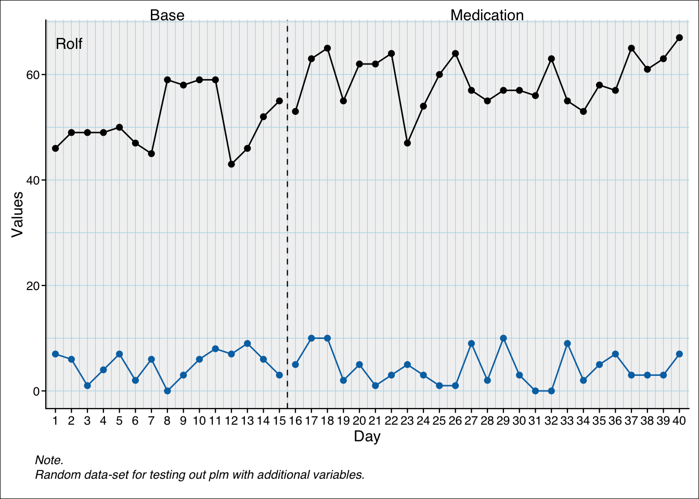
Styling parameters like line and point colour will be set automatically based on the applied graphic theme. We will learn later about how to change and modify these themes. If you want to directly change the styling parameters, you can use the line and point arguments which take lists with styling parameters. For line, the parameters are colour, linewidth, linetype, lineend, and arrow. For point the parameters are colour, size, and shape.
scplot(exampleAB_add) |>
set_dataline(
line = list(colour = "darkred", linewidth = 2),
point = list(colour = "black", size = 3, shape = 15)
)5.4 Add statlines
The add_statline function call:
add_statline(
object,
stat = c(“mean”, “median”, “min”, “max”, “quantile”, “sd”, “mad”, “trend”, “trendA”, “trendA theil-sen”, “moving mean”, “moving median”, “loreg”, “lowess”, “loess”),
phase = NULL,
color = NULL,
linewidth = NULL,
linetype = NULL,
variable = NULL,
label = NULL,
…
)
5.4.1 Lines indicating a constant for each phase
Possible functions: mean, min, max, median, sd, quantile
scplot(exampleABC) |>
add_statline("mean") |>
add_statline("max") |>
add_statline("min") |>
add_statline("median")5.4.2 Lines indicating a constant for a specific phase
Set the phase argument with one or multiple phase-names or phase-numbers
Possible functions: mean, min, max, quantile
The following example sets a line with the mean of phase A, the maximum of phases B and C and the minimum of phases 2 and 3:
scplot(exampleABC) |>
add_statline("mean", phase = "A") |>
add_statline("max", phase = c("B", "C")) |>
add_statline("min", phase = c(2, 3)) |>
add_legend()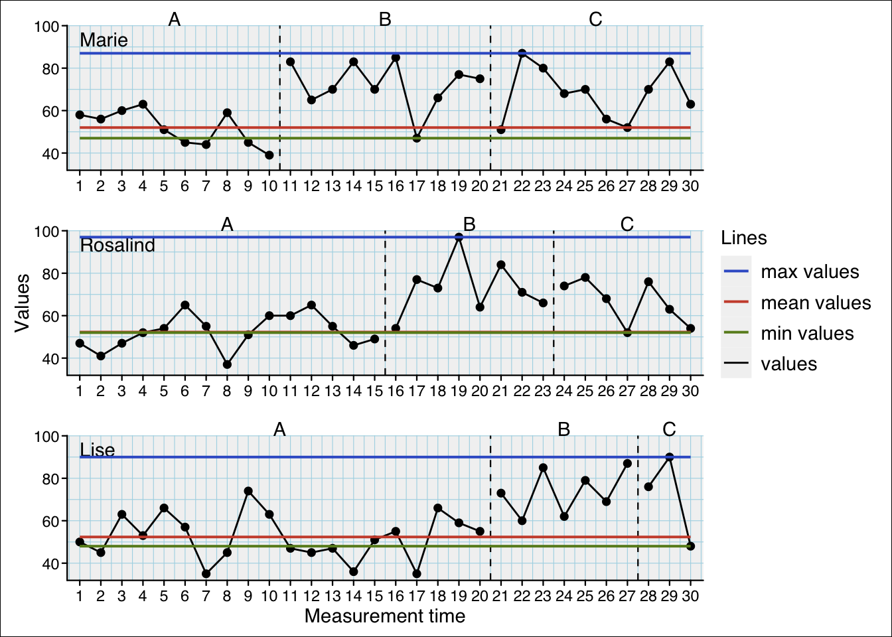
5.4.3 Trend-lines
trend (separate trend-line for each phase), trendA (extrapolated trend-line of first phase):
scplot(exampleABC) |>
add_statline("trend") |>
add_statline("trendA")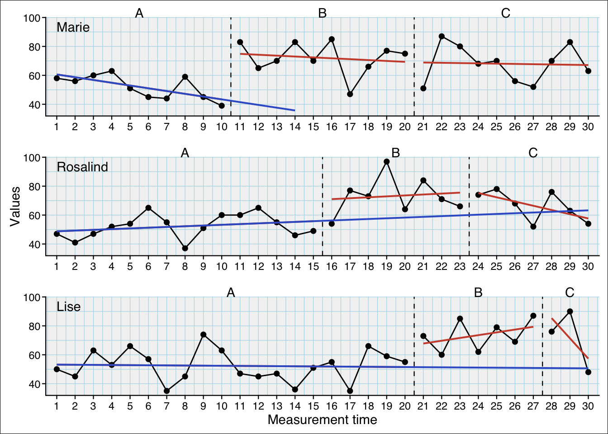
You scan specify various methods with the method argument for the trendA statistic:
scplot(exampleABC) |>
add_statline("trendA") |>
add_statline("trendA", method = "theil-sen") |>
add_statline("trendA", method = "bisplit") |>
add_statline("trendA", method = "trisplit") |>
add_legend()For the trend statistic you can set method = "theil-sen" for median based Theil-Sen slope lines.
5.4.4 Smoothed curves
Possible functions: moving mean, moving median, loess, lowess:
scplot(exampleABC) |>
add_statline("loess") |>
add_statline("moving mean")
5.4.5 Refine with additional arguments
Some of the statistics allow additional arguments to specify parameters:
| Statistic | Argument | What it does … |
|---|---|---|
| mean | trim | Trims the mean. trim = 0.10 calculates a 10$ trimmed mean. |
| quantile | probs | Probability. probs = 0.25 calculates the 25% quantile. |
| moving mean, moving median | lag | Lag surrounding the estimated value. lag = 2 will calculate mean or median based on the two values before and after the to be replaced value. |
| loess | span | Proportion of the surrounding point to estimate a value. |
| lowess | f | Proportion of the surrounding point to estimate a value. |
scplot(exampleABC) |>
add_statline("moving mean", lag = 1) |>
add_statline("quantile", probs = 0.75)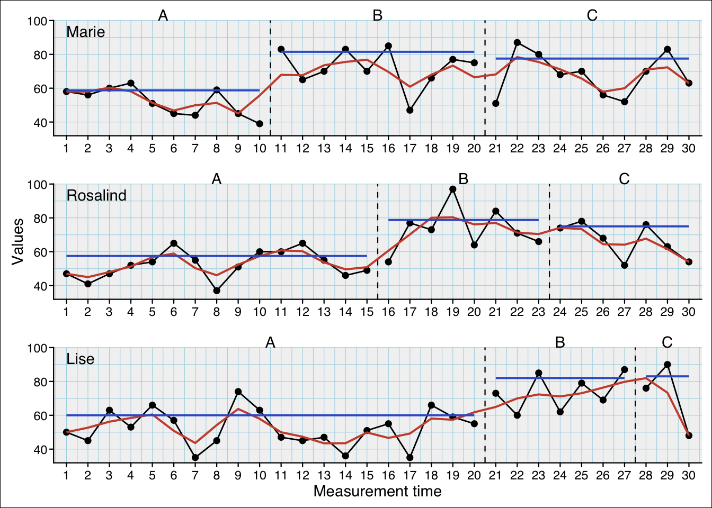
5.4.6 Specify data-line
If you do not specify the variable argument, the default first data-line is addressed.
scplot(exampleAB_add) |>
set_dataline("cigarrets") |>
add_statline("mean", variable = "cigarrets") |>
add_statline("trend")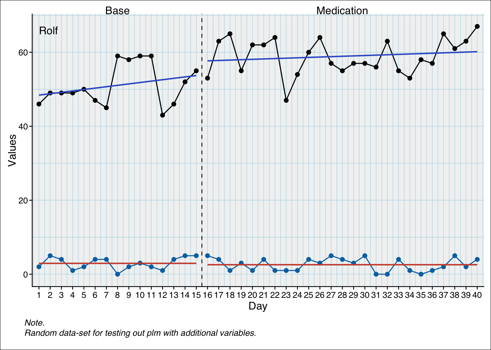
5.5 Annotate and mark
5.5.1 Add marks
The positions argument can take a numeric vector:
scplot(exampleABC) |>
add_marks(case = 1, positions = c(7, 12)) |>
add_marks(case = 3, positions = c(3, 17), color = "blue", size = 7)The positions argument can also be a string containing a logical expression. This will be evaluated and the respective positions will be marked.
scplot(exampleABC) |>
add_marks(case = 1, positions = "mt > 15") |>
add_marks(case = 2, positions = 'phase == "B"', color = "green", size = 5) |>
add_marks(case = 3, positions = "values > quantile(values, probs = 0.80)", color = "blue", size = 7) |>
add_marks(case = "all", positions = "values < quantile(values, probs = 0.20)", color = "yellow", size = 7) |>
add_caption("Note.
red: mt > 15 in case 1;
green: phase 'B' in case 2;
blue: values > 80% quantile of case 3;
yellow: values < 20% quantile of all cases")
And the positions argument can take the results from a scan outlier analyses and mark the positions of the outliers of each case:
scplot(exampleABC_outlier) |>
add_marks(positions = outlier(exampleABC_outlier), size = 3)
5.5.2 Add text
scplot(exampleABC) |>
add_text("Here!", case = 2, x = 10, y = 80, color = "red")5.5.3 Add line
Draw lines either by providing starting (x0 and y0) an end coordinates (x1 and y1) or a horizontal (hline) or vertical (vline) position:
scplot(exampleABC) |>
add_line(case = 1, x0 = 6, y0 = 90, x1 = 3, y1 = 63, color = "red") |>
add_line(case = 2, hline = 80, color = "blue") |>
add_line(case = 3, vline = 15, color = "green")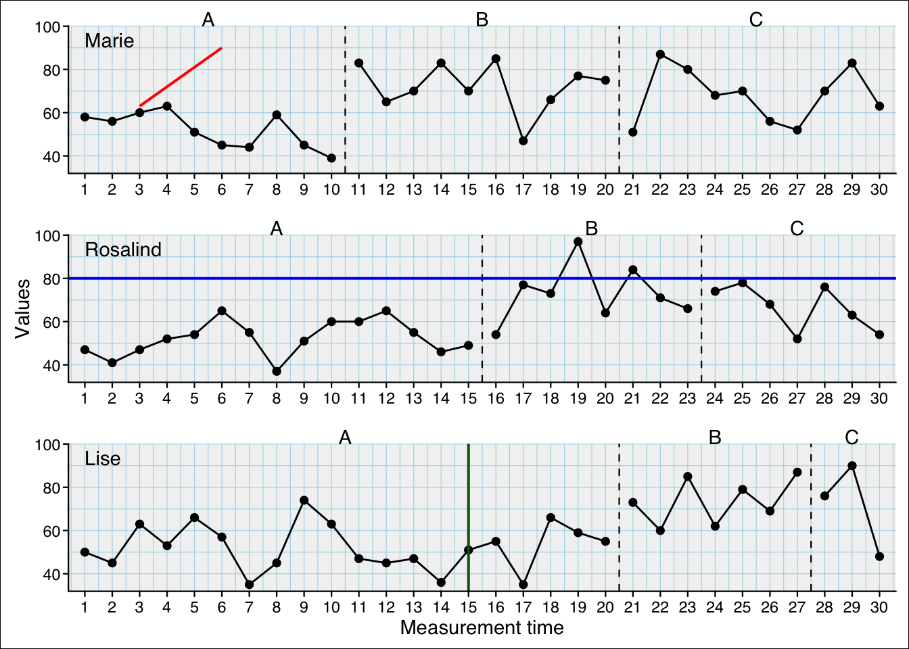
Draw an arrow:
scplot(exampleABC) |>
add_arrow(case = 1, x0 = 6, y0 = 90, x1 = 3, y1 = 63) |>
add_text("Problem", case = 1, x = 6, y = 94, color = "red", size = 1, hjust = 0 ) 5.6 Change appearance of basic plot elements
5.6.1 Data line
scplot(exampleABC) |>
set_dataline(color = "blue", linewidth = 1, linetype = "dotted",
point = list(colour = "red", size = 1, shape = 2) )# Equivalent_
# scplot(exampleABC) |>
# set_dataline(line = list(colour = "blue", size = 1, linetype = "dotted"),
# point = list(colour = "red", size = 1, shape = 2)) 5.6.2 Background
scplot(exampleABC) |>
set_background(fill = "grey90", color = "black", size = 2)
5.6.3 Panel
scplot(exampleABC) |>
set_panel(fill = "tan1", color = "palevioletred", size = 2)
5.6.4 A different panel color for each phase
Note: The colors are 50% transparent. So they might appear different.
scplot(exampleABC) |>
set_panel(fill = c("grey80", "white", "blue4"))
5.7 Themes
Themes are complete styles that define various elements of a plot.
Function set_theme("theme_name")
Possible themes:
basic, grid, default, small, tiny, big, minimal, dark, sienna, phase_color, phase_shade, grid2, illustration
5.7.1 An overview
5.7.2 Combine themes
When providing multiple themes the order is important as the latter overwrites styles of the former.
scplot(exampleABC) |>
set_theme("sienna", "minimal", "small", "phase_color")5.7.3 Set base text
The base text size is the absolute size. All other text sizes are relative to this base text size.
scplot(exampleAB_decreasing$Peter) |>
set_base_text(colour = "blue", family = "serif", face = "italic", size = 14)5.8 Add title and caption
scplot(exampleAB_decreasing) |>
add_title("A new plot", color = "darkblue", size = 1.3) |>
add_caption("Note. What a nice plot!", face = "italic", color = "darkred")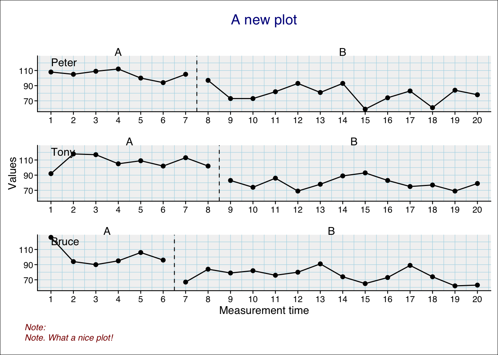
5.9 Add a legend
The add_legend() function adds a predefined legend that includes all datalines and statlines you have added. The labels for these lines are set automatically if you did not set the label argument in the corresponding add_dataline() and add_statline() functions.
Here is a simple example:
scplot(exampleABC) |>
add_statline("mean", color = "darkred") |>
add_statline("min", phase = "B", linewidth = 0.2, color = "darkblue") |>
add_legend()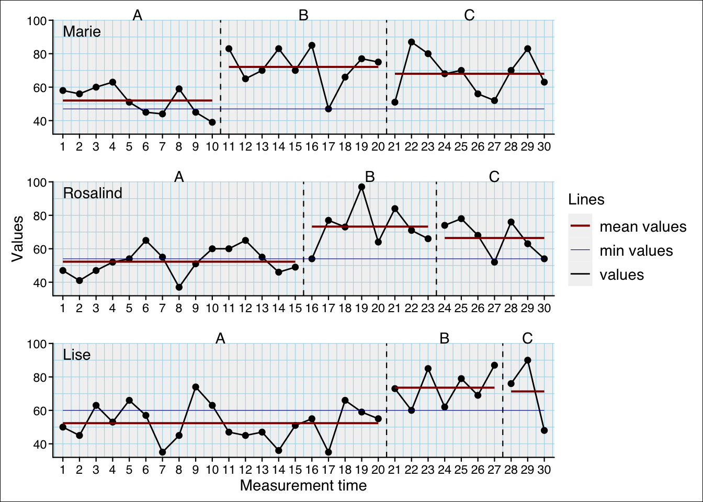
And here is a more advanced example that uses several arguments to defines the style of the legend:
scplot(exampleAB_add) |>
set_dataline(label = "Pychological Wellbeing") |>
set_dataline("depression", color = "darkblue", label = "Depression") |>
add_statline("mean", label = "Wellbeing mean") |>
add_statline("mean", variable = "depression", label = "Depression mean") |>
set_phasenames(color = NA) |>
set_panel(fill = c("lightblue", "grey80")) |>
add_legend(
position = "left",
section_labels = c("Variables", "Section"),
title = list(color = "brown", size = 10, face = 2),
text = list(color = "darkgreen", size = 10, face = 2),
background = list(color = "lightgrey")
)5.10 Customize axis settings
When axis ticks are to close together set the increment argument to leave additional space (e.g. increment = 2 will annotate every other value). When you set increment_from = 0 an additional tick will be set at 1 although counting of the increments will start at 0.
scplot(exampleA1B1A2B2) |>
set_xaxis(increment_from = 0, increment = 5,
color = "darkred", size = 0.7, angle = -90) |>
set_yaxis(limits = c(0, 50), size = 0.7, color = "darkred") 5.11 Customize axis labels
scplot(exampleA1B1A2B2) |>
set_ylabel("Score", color = "darkred", angle = 0) |>
set_xlabel("Session", color = "darkred")5.12 Change Casenames
scplot(exampleA1B1A2B2) |>
set_casenames(c("A", "B", "C"), color = "darkblue", size = 1)
Casenames as strips:
scplot(exampleA1B1A2B2) |>
set_casenames(position = "strip",
background = list(fill = "lightblue"))
5.13 Add value labels
scplot(exampleABC) |>
add_labels(text = list(color = "black", size = 0.7),
background = list(fill = "grey98"), nudge_y = 7)Warning: Removed 1 row containing missing values or values outside the scale range
(`geom_label()`).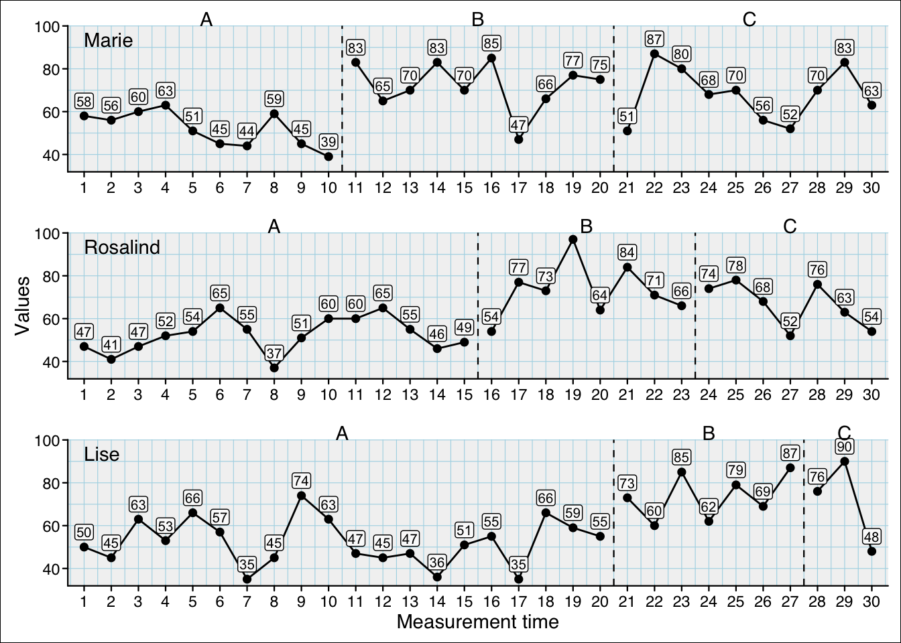
If you set the nudge_y argument to 0, the label will be set on-top the datapoints:
scplot(exampleABC) |>
add_labels(text = list(color = "black", size = 0.7),
background = list(fill = "grey98"), nudge_y = 0)
5.14 Add a ridge
scplot(exampleAB_mpd) |>
add_ridge("grey50")5.15 Extending scplot with ggplot2
scplot() generates ggplot2 objects. You can keep the ggplot2 object and assign it into a new object with the as_ggplot() function. Thereby, you can use many ggplot2 functions to rework your graphics:
p1 <- scplot(byHeart2011$`Lisa (Turkish)`) |>
set_theme("minimal") |>
as_ggplot()
p2 <- scplot(byHeart2011$`Patrick (Spanish)`) |>
set_theme("minimal") |>
as_ggplot()
p3 <- scplot(byHeart2011$`Anna (Twi)`) |>
set_theme("minimal") |>
as_ggplot()
p4 <- scplot(byHeart2011$`Melanie (Swedish)`) |>
set_theme("minimal") |>
as_ggplot()
library(patchwork)
p1 + p2 + p3 + p4 + plot_annotation(tag_levels = "a", tag_suffix = ")")
5.16 Complexs examples
Here are some more complex examples
scplot(example_A24) |>
add_statline("lowess", linewidth = 1.5) |>
add_statline("loess", linewidth = 1.5) |>
add_statline("moving mean", lag = 3, linewidth = 1.5) |>
set_xaxis(size = 0.8, angle = 35) |>
set_dataline(point = "none") |>
add_legend(position = c(0.8, 0.75), background = list(color = "grey50")) |>
set_phasenames(c("no speedlimit", "with speedlimit"),
position = "left", hjust = 0, vjust = 1) |>
set_casenames(position = "none") |>
add_title("Effect of a speedlimit on the A24") |>
add_caption("Note: Moving mean calculated with lag three", face = 3, size = 1) |>
add_ridge(color = "lightblue")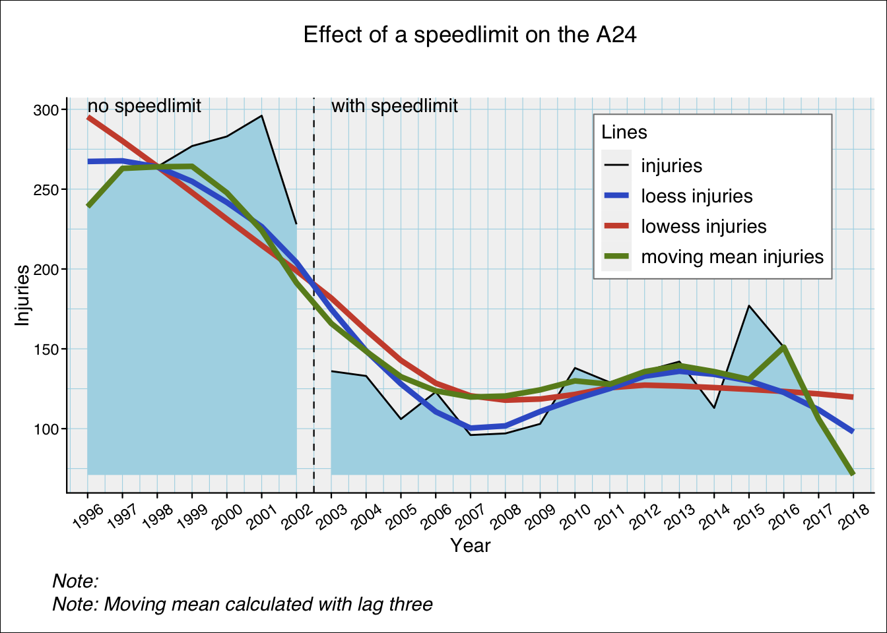
scplot(exampleAB_add) |>
set_dataline("cigarrets", point = list(size = 1)) |>
add_statline("trend", linetype = "dashed", label = "Trend of wellbeing") |>
add_statline("mean", variable = "cigarrets", color = "darkred", label = "Mean of cigarrets") |>
add_marks(positions = c(14,20), size = 3, variable = "cigarrets")|>
add_marks(positions = "cigarrets > quantile(cigarrets, 0.75)", size = 3) |>
set_xaxis(increment = 5) |>
set_phasenames(color = NA) |>
set_casenames(position = "strip") |>
add_legend(
section_labels = c("", ""),
text = list(face = 3)
) |>
set_panel(fill = c("lightblue", "grey80")) |>
add_ridge(color = "snow", variable = "cigarrets") |>
add_labels(variable = "cigarrets", nudge_y = 2,
text = list(color = "blue", size = 0.5)) |>
add_labels(nudge_y = 2, text = list(color = "black", size = 0.5),
background = list(fill = "white"))Warning: Removed 1 row containing missing values or values outside the scale range
(`geom_label()`).scplot(exampleA1B1A2B2) |>
set_xaxis(increment = 4, size = 0.7) |>
set_yaxis(color = "sienna3") |>
set_ylabel("Points", color = "sienna3", angle = 0) |>
set_xlabel("Weeks", size = 1, color = "brown") |>
add_title("Points by week", color = "sienna4", face = 3) |>
add_caption("Note: An extensive Example.",
color = "black", size = 1, face = 3) |>
set_phasenames(c("Baseline", "Intervention", "Fall-Back", "Intervention_2"),
size = 0) |>
add_ridge(scales::alpha("lightblue", 0.5)) |>
set_casenames(labels = sample_names(3), color = "steelblue4", size = 0.7) |>
set_panel(fill = c("grey80", "grey95"), color = "sienna4") |>
add_grid(color = "grey85", linewidth = 0.1) |>
set_dataline(size = 0.5, linetype = "solid",
point = list(colour = "sienna4", size = 0.5, shape = 18)) |>
add_labels(text = list(color = "sienna", size = 0.7), nudge_y = 4) |>
set_separator(size = 0.5, linetype = "solid", color = "sienna") |>
add_statline(stat = "trendA", color = "tomato2") |>
add_statline(stat = "max", phase = c(1, 3), linetype = "dashed") |>
add_marks(case = 1:2, positions = 14, color = "red3", size = 2, shape = 4) |>
add_marks(case = "all", positions = "values < quantile(values, 0.1)",
color = "blue3", size = 1.5) |>
add_marks(positions = outlier(exampleABAB), color = "brown", size = 2) |>
add_text(case = 1, x = 5, y = 35, label = "Interesting",
color = "darkgreen", angle = 20, size = 0.7) |>
add_arrow(case = 1, 5, 30, 5, 22, color = "steelblue") |>
set_background(fill = "white") |>
add_legend() |>
set_theme("basic") |>
set_theme_element(panel.spacing.y = unit(0, "points"))Warning: Removed 6 rows containing missing values or values outside the scale range
(`geom_text()`).
Adding bars is a bit more complicated:
- Set the
typeargument to"bar"
- Extend the limits of the x-axis by 1 (here from
0to41)
- Set the left margin of the x-axis to
0with theexpandargument.
scplot(exampleAB_add) |>
set_xaxis(expand = c(0, 0), limits = c(0, 41)) |>
set_dataline("cigarrets", type = "bar", linewidth = 0.6, point = "none") |>
add_statline("mean", variable = "cigarrets", color = "darkred") |>
add_statline("trend", linetype = "dashed") |>
set_casenames(position = "strip")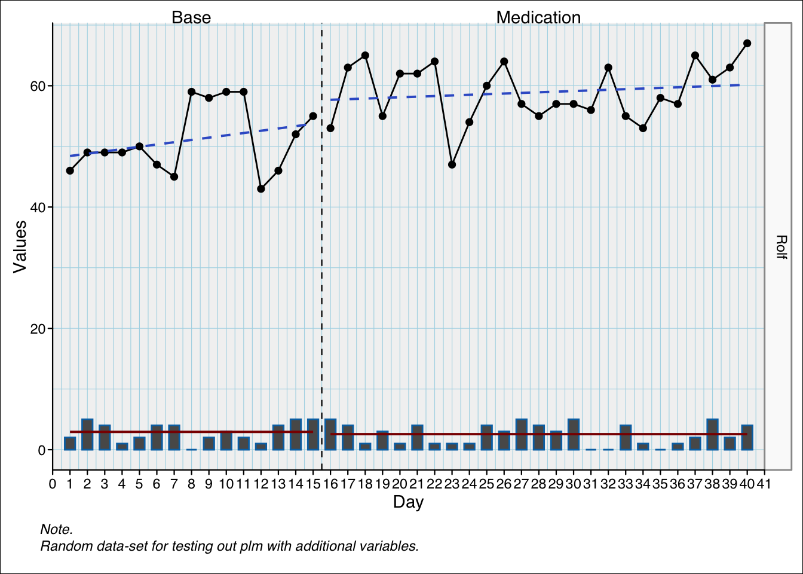